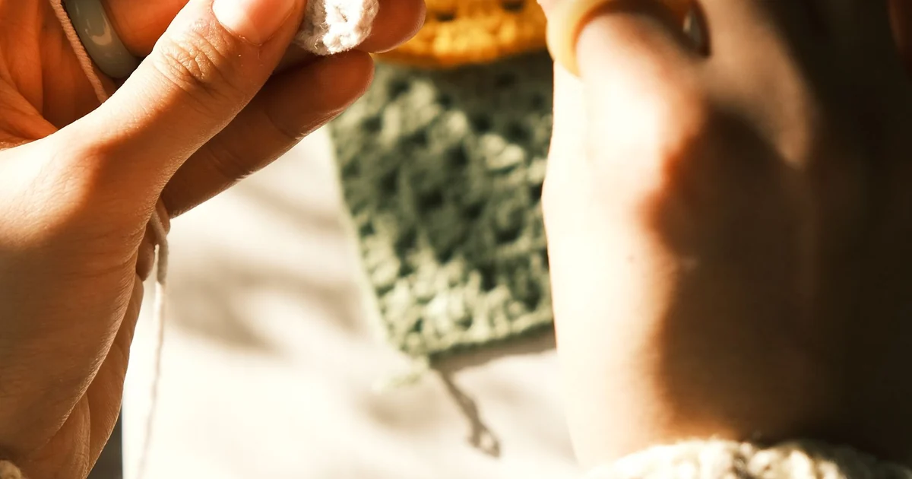
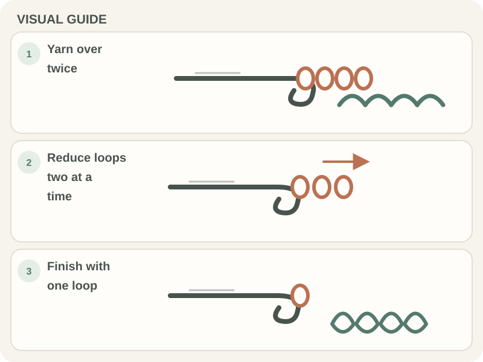

Stitches & Techniques · Beginner guide
How to Make a Treble Crochet Stitch
Make a US treble crochet using two yarn overs before insertion and three staged pull-throughs.

US treble crochet (tr) is a tall stitch. The extra yarn over distinguishes it from US double crochet and gives the fabric more height.
Before you begin
Check the pattern’s terminology and turning-chain instructions. UK “treble crochet” is a different stitch from US treble crochet.
Step-by-step instructions
- Yarn over twice, insert the hook, yarn over, and draw up a loop. Four loops are on the hook.
- Yarn over and draw through the first two loops; three remain.
- Yarn over and draw through the next two loops; two remain.
- Yarn over once more and draw through the final two loops. Keep the tall post relaxed.

What to check
Three pairs, worked in sequence
A completed US treble has three pull-through stages and one loop left on the hook. Count the stages while learning; skipping one changes the stitch height.
Frequently asked questions
How many yarn overs before insertion?
Two in a standard US treble crochet, followed by three pull-throughs through pairs of loops.
Why does my treble lean?
Tall stitches move more than short ones. Check the base insertion point and avoid pulling one side tighter.
Can treble crochet replace double crochet in a pattern?
Not without checking the pattern. US treble is taller, so substitution changes row height, drape, and usually the finished dimensions.
How can I keep a tall treble stitch from leaning?
Keep the base insertion point consistent and avoid pulling one side tighter than the other. Tall posts can lean while the fabric is held; compare them flat before changing your hook or tension.
Count four loops, then work three pairs
Two yarn-overs before insertion, followed by a draw-up, leave four loops on the hook. The pull-throughs reduce that count in stages: four to three, three to two, then two to one. Keep the loops spread along the shaft so the hook can pass through two at a time. If the loop count changes unexpectedly, stop and check the preceding yarn-over instead of completing the stitch by guesswork.
Manage the height of the post
US treble crochet is taller than US double crochet, so its post has more room to flex. Do not use the post’s lean alone as a sign of an incorrect stitch. Check that the base enters the intended stitch and that each pairwise pull-through is complete. At a row edge, follow the pattern for turning-chain height and whether that chain counts. Those edge instructions can differ from the rule used for stitches in the middle.
Place the tall stitch without stretching the base
Tall posts can make the row feel loose even when the stitch count is correct. Insert into the location the pattern names and draw up the loop without pulling the base stitch open. Keep the yarn-overs on the shaft as you work the pairs through. If the swatch has long gaps, compare the loop height and insertion depth rather than tightening every stitch; over-tightening can make the pull-throughs difficult.
Check turning-chain height and row count
A taller stitch often needs a taller turning chain, but the pattern determines the exact number and whether it counts as a stitch. Check that direction at the start and end of every row. Count completed top Vs rather than vertical posts, because the turning chain may represent an edge stitch in some patterns. A small swatch shows whether your row height matches the project before you commit to a larger piece.
Use treble crochet where its height is intended
A US treble crochet makes a taller, more open fabric than shorter basic stitches, but it may not be the right substitute for a double crochet. Height changes how much yarn each stitch uses and how many rows a project needs. A pattern’s gauge, stitch repeat, and finished measurements all matter. When practicing, compare a few rows side by side with the pattern notes. If the tall posts look loose, first check loop height and yarn-over placement; tightening every stitch can make the finished swatch stiff.
Common mistakes and how to fix them
- Making only one yarn-over before insertion. That changes the stitch height. Count both wraps before inserting the hook.
- Drawing through more than two loops at once. Work one pair at a time so the tall post forms the expected stages.
- Treating US and UK treble as identical. They are different stitches. Confirm the pattern’s terminology before starting.
Tips that make it easier
- Lay the swatch flat to compare stitch height; tall posts may lean while held.
- Keep the yarn-overs visible on the shaft so they do not slip off during insertion.
- Practice a small group and count the remaining loops at each stage.
A useful next step
Check the pattern’s instructions against a short sample before continuing, then follow its stated stitch and edge rules.